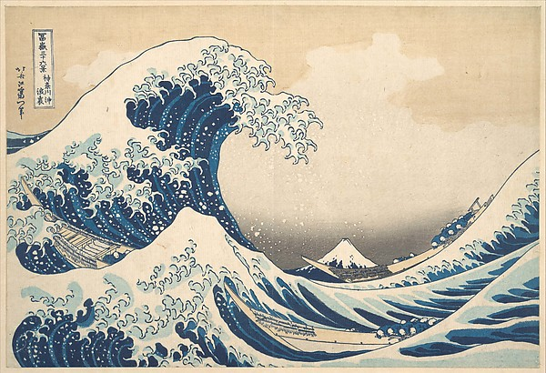
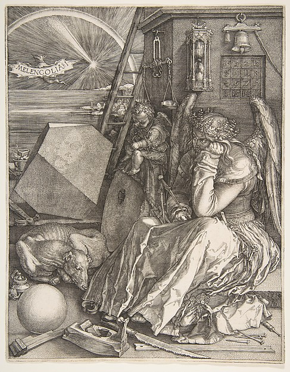
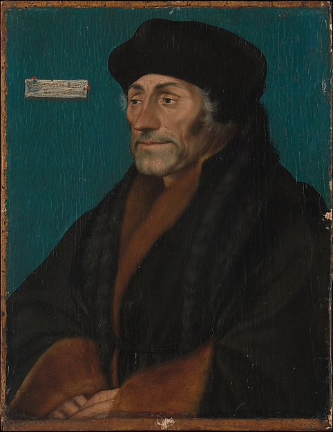
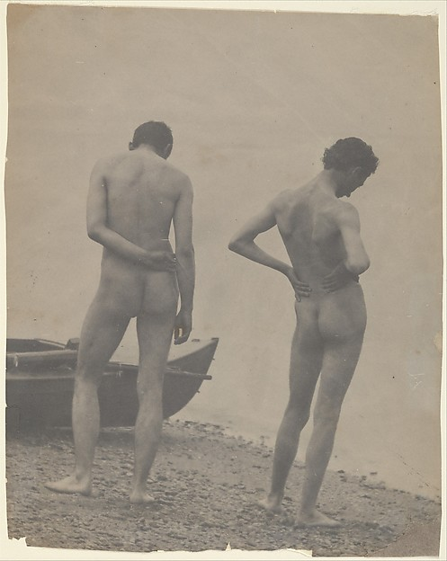

TODO
 Katsushika Hokusai Under the Wave off Kanagawa (Kanagawa oki nami ura), or The Great Wave, from the series Thirty-six Views of Mount Fuji (Fugaku sanjūrokkei), ca. 1830–32
Hans Memling The Annunciation, 1480–89
Joseph Mallord William Turner Venice, from the Porch of Madonna della Salute, ca. 1835
Pieter Bruegel the Elder The Harvesters, 1565
Vincent van Gogh Wheat Field with Cypresses, 1889
 Albrecht Dürer Melencolia I, 1514
Ferdinand Hodler The Dream of the Shepherd (Der Traum des Hirten), 1896
 Hans Holbein the Younger Erasmus of Rotterdam, ca. 1532
Paul Cézanne Still Life with Apples and a Pot of Primroses, ca. 1890
 Thomas Eakins [Thomas Eakins and John Laurie Wallace on a Beach], ca. 1883
Hans Memling Portrait of a Young Man, ca. 1472–75
 Hans Memling
The Annunciation,
1480–89
Hans Memling
The Annunciation,
1480–89
 Joseph Mallord William Turner
Venice, from the Porch of Madonna della Salute,
ca. 1835
Joseph Mallord William Turner
Venice, from the Porch of Madonna della Salute,
ca. 1835
 Pieter Bruegel the Elder
The Harvesters,
1565
Pieter Bruegel the Elder
The Harvesters,
1565
 Vincent van Gogh
Wheat Field with Cypresses,
1889
Vincent van Gogh
Wheat Field with Cypresses,
1889
 Ferdinand Hodler
The Dream of the Shepherd (Der Traum des Hirten),
1896
Ferdinand Hodler
The Dream of the Shepherd (Der Traum des Hirten),
1896
 Paul Cézanne
Still Life with Apples and a Pot of Primroses,
ca. 1890
Paul Cézanne
Still Life with Apples and a Pot of Primroses,
ca. 1890
 Hans Memling
Portrait of a Young Man,
ca. 1472–75
Hans Memling
Portrait of a Young Man,
ca. 1472–75